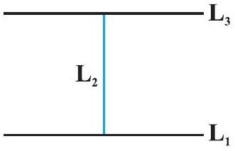
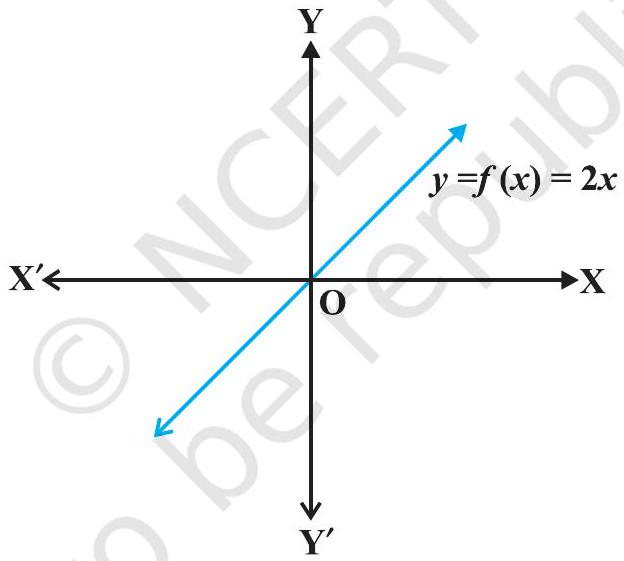
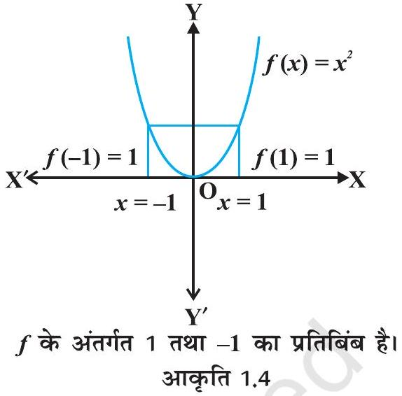

मान लीजिए कि A किसी बालकों के स्कूल के सभी विद्यार्थियों का समुच्चय है। दर्शाइए कि R = {(a, b): a, b की बहन है } द्वारा प्रदत्त संबंध एक रिक्त संबंध है तथा R′ = {(a, b): a तथा b की ऊँचाईयों का अंतर 3 मीटर से कम है } द्वारा प्रदत्त संबंध एक सार्वत्रिक संबंध है।
मान लीजिए कि T किसी समतल में स्तिथ समस्त त्रिभुजों का एक समुच्चय है। समुच्चय T में R = {(T1, T2): T1, T2 के सर्वागंसम है } एक संबंध है। सिद्ध कीजिए कि R एक तुल्यता संबंध है।
मान लीजिए कि L किसी समतल में स्थित समस्त रेखाओं का एक समुच्चय है तथा R = {(L1, L2): L1, L2 पर लंब है } समुच्चय L में परिभाषित एक संबंध है। सिद्ध कीजिए कि R सममित है किंतु यह न तो स्वतुल्य है और न संक्रामक है।
सिद्ध कीजिए कि समुच्चय {1,2,3} में R = {(1,1),(2,2), (3,3),(1,2),(2,3)} द्वारा प्रदत्त संबंध स्वतुल्य है, परंतु न तो सममित है और न संक्रामक है।

सिद्ध कीजिए कि पूर्णांकों के समुच्चय Z में R = {(a, b): संख्या 2,(a-b) को विभाजित करती है द्वारा प्रदत्त संबंध एक तुल्यता संबंध है।
मान लीजिए कि समुच्चय A = {1,2,3,4,5,6,7} में R = {(a, b): a तथा b दोनों ही या तो विषम हैं या सम हैं द्वारा परिभाषित एक संबंध है। सिद्ध कीजिए कि R एक तुल्यता संबंध है। साथ ही सिद्ध कीजिए कि उपसमुच्चय {1,3,5,7} के सभी अवयव एक दूसरे से संबंधित है, और उपसमुच्चय {2,4,6} के सभी अवयव एक दूसरे से संबंधित है, परंतु उपसमुच्चय {1,3,5,7} का कोई भी अवयव उपसमुच्चय {2,4,6} के किसी भी अवयव से संबंधित नहीं है।
मान लीजिए कि कक्षा X के सभी 50 विद्यार्थियों का समुच्चय A है। मान लीजिए f: A → N, f(x) = विद्यार्थी x का रोल नंबर, द्वारा परिभाषित एक फलन है। सिद्ध कीजिए कि f एकैकी है किंतु आच्छादक नहीं है।
सिद्ध कीजिए कि f(x) = 2 x द्वारा प्रदत्त फलन f: N → N, एकैकी है किंतु आच्छादक नहीं है।
सिद्ध कीजिए कि f(x) = 2 x द्वारा प्रदत्त फलन f: R → R, एकैकी तथा आच्छादक है।

सिद्ध किजिए कि f(1) = f(2) = 1 तथा x>2 के लिए f(x) = x-1 द्वारा प्रदत्त फलन f: N → N, आच्छादक तो है किंतु एकैकी नहीं है।
सिद्ध कीजिए कि f(x) = x² द्वारा परिभाषित फलन f: R → R, न तो एकैकी है और न आच्छादक है।

सिद्ध कीजिए कि नीचे परिभाषित फलन f: N → N, एकैकी तथा आच्छादक दोनों ही है f(x) = {x+1, यदि x विषम है x-1, यदि x सम है
सिद्ध कीजिए कि आच्छादक फलन f:{1,2,3} →{1,2,3} सदैव एकैकी फलन होता है।
सिद्ध कीजिए कि एक एकैकी फलन f:{1,2,3} →{1,2,3} अनिवार्य रूप से आच्छादक भी है।
मान लीजिए कि f:{2,3,4,5} →{3,4,5,9} और g:{3,4,5,9} →{7,11,15} दो फलन इस प्रकार हैं कि f(2) = 3, f(3) = 4, f(4) = f(5) = 5 और g(3) = g(4) = 7 तथा g(5) = g(9) = 11, तो g o f ज्ञात कीजिए।
यदि f: R → R तथा g: R → R फलन क्रमशः f(x) = cos x तथा g(x) = 3 x² द्वारा परिभाषित है तो g o f और f o g ज्ञात कीजिए। सिद्ध कीजिए g o f ≠ f o g.
मान लीजिए कि f: N → Y, f(x) = 4 x+3, द्वारा परिभाषित एक फलन है, जहाँ Y = {y ∈ N: y = 4 x+3 किसी x ∈ N के लिए } । सिद्ध कीजिए कि f व्युत्क्रमणीय है। प्रतिलोम फलन भी ज्ञात कीजिए।
यदि R1 तथा R2 समुच्चय A में तुल्यता संबंध हैं, तो सिद्ध कीजिए कि R1 ∩ R2 भी एक तुल्यता संबंध है।
मान लीजिए कि समुच्चय A में धन पूर्णांकों के क्रमित युग्मों (ordered pairs)का एक संबंध R,(x, y) R(u, v), यदि और केवल यदि, x v = y u द्वारा परिभाषित है। सिद्ध कीजिए कि R एक तुल्यता संबंध है।
मान लीजिए कि X = {1,2,3,4,5,6,7,8,9} है। मान लीजिए कि X में R1 = {(x, y): x-y संख्या 3 से भाज्य है } द्वारा प्रदत्त एक संबंध R1 है तथा R2 = {(x, y):{x, y} ⊂{1,4,7} या {x, y} ⊂{2,5,8} या {(x, y} ⊂{3,6,9} द्वारा प्रदत्त X में एक अन्य संबंध R2 है। सिद्ध कीजिए कि R1 = R2 है।
मान लीजिए कि f: X → Y एक फलन है। X में R = {(a, b): f(a) = f(b)} द्वारा प्रदत्त एक संबंध R परिभाषित कीजिए। जाँचिए कि क्या R एक तुल्यता संबंध है।
समुच्चय A = {1,2,3} से स्वयं तक सभी एकैकी फलन की संख्या ज्ञात कीजिए।
मान लीजिए कि A = {1,2,3} है। तब सिद्ध कीजिए कि ऐसे संबंधों की संख्या चार है, जिनमें (1,2) तथा (2,3) हैं और जो स्वतुल्य तथा संक्रामक तो हैं किंतु सममित नहीं हैं।
सिद्ध कीजिए कि समुच्चय {1,2,3} में (1,2) तथा (2,1) को अन्तर्विष्ट करने वाले तुल्यता संबंधों की संख्या 2 है।
तत्समक फलन IN: N → N पर विचार कीजिए, जो IN(x) = x, ∀ x ∈ N द्वारा परिभाषित है। सिद्ध कीजिए कि, यद्यपि IN आच्छादक है किंतु निम्नलिखित प्रकार से परिभाषित फलन IN+IN: N → N आच्छादक नहीं है (IN+IN)(x) = IN(x)+IN(x) = x+x = 2 x
f(x) = sin x द्वारा प्रदत्त फलन f:[0, π2] → R तथा g(x) = cos x द्वारा प्रदत्त फलन g:[0, π2] → R पर विचार कीजिए। सिद्ध कीजिए कि f तथा g एकैकी है, परंतु f+g एकैकी नहीं है।
निर्धारित कीजिए कि क्या निम्नलिखित संबंधों में से प्रत्येक स्वतुल्य, सममित तथा संक्रामक हैं :
समुच्चय A = {1,2,3, …, 13,14} में संबंध R , इस प्रकार परिभाषित है कि R = {(x, y): 3 x-y = 0}
प्राकृत संख्याओं के समुच्चय N में R = {(x, y): y = x+5 तथा x<4} द्वारा परिभाषित संबंध R.
समुच्चय A = {1,2,3,4,5,6} में R = {(x, y): y भाज्य है x से } द्वारा परिभाषित संबंध R है।
समस्त पूर्णांकों के समुच्चय Z में R = {(x, y): x-y एक पूर्णांक है } द्वारा परिभाषित संबंध R.
किसी विशेष समय पर किसी नगर के निवासियों के समुच्चय में निम्नलिखित संबंध R (a) R = {(x, y): x तथा y एक ही स्थान पर कार्य करते हैं } (b) R = {(x, y): x तथा y एक ही मोहल्ले में रहते हैं } (c) R = {(x, y): x, y से ठीक-ठीक 7 सेमी लंबा है } (d) R = {(x, y): x, y की पत्नी है } (e) R = {(x, y): x, y के पिता हैं }
सिद्ध कीजिए कि वास्तविक संख्याओं के समुच्चय R में R = {(a, b): a ≤ b²}, द्वारा परिभाषित संबंध R, न तो स्वतुल्य है, न सममित हैं और न ही संक्रामक है।
जाँच कीजिए कि क्या समुच्चय {1,2,3,4,5,6} में R = {(a, b): b = a+1} द्वारा परिभाषित संबंध R स्वतुल्य, सममित या संक्रामक है।
सिद्ध कीजिए कि R में R = {(a, b): a ≤ b}, द्वारा परिभाषित संबंध R स्वतुल्य तथा संक्रामक है किंतु सममित नहीं है।
जाँच कीजिए कि क्या R में R = {(a, b): a ≤ b³} द्वारा परिभाषित संबंध स्वतुल्य, सममित अथवा संक्रामक है?
सिद्ध कीजिए कि समुच्चय {1,2,3} में R = {(1,2),(2,1)} द्वारा प्रदत्त संबंध R सममित है किंतु न तो स्वतुल्य है और न संक्रामक है।
सिद्ध कीजिए कि किसी कॉलेज के पुस्तकालय की समस्त पुस्तकों के समुच्चय A में R = {(x, y): x तथा y में पेजों की संख्या समान है } द्वारा प्रदत्त संबंध R एक तुल्यता संबंध है।
सिद्ध कीजिए कि A = {1,2,3,4,5} में, R = {(a, b):|a-b| सम है } द्वारा प्रदत्त संबंध R एक तुल्यता संबंध है। प्रमाणित कीजिए कि {1,3,5} के सभी अवयव एक दूसरे से संबंधित हैं और समुच्चय {2,4} के सभी अवयव एक दूसरे से संबंधित हैं परंतु {1,3,5} का कोई भी अवयव {2,4} के किसी अवयव से संबंधित नहीं है।
सिद्ध किजिए कि समुच्चय A = {x ∈ Z: 0 ≤ x ≤ 12}, में दिए गए निम्नलिखित संबंधों R में से प्रत्येक एक तुल्यता संबंध है:
R = {(a, b):|a-b|, 4 का एक गुणज है }, प्रत्येक दशा में 1 से संबंधित अवयवों को ज्ञात कीजिए।
R = {(a, b): a = b}, प्रत्येक दशा में 1 से संबंधित अवयवों को ज्ञात कीजिए।
ऐसे संबंध का उदाहरण दीजिए, जो
सममित हो परंतु न तो स्वतुल्य हो और न संक्रामक हो।
संक्रामक हो परंतु न तो स्वतुल्य हो और न सममित हो।
स्वतुल्य तथा सममित हो किंतु संक्रामक न हो।
स्वतुल्य तथा संक्रामक हो किंतु सममित न हो।
सममित तथा संक्रामक हो किंतु स्वतुल्य न हो।
सिद्ध कीजिए कि किसी समतल में स्थित बिंदुओं के समुच्चय में, R = {(P, Q) : बिंदु P की मूल बिंदु से दूरी, बिंदु Q की मूल बिंदु से दूरी के समान है } द्वारा प्रदत्त संबंध R एक तुल्यता संबंध है। पुनः सिद्ध कीजिए कि बिंदु P ≠(0,0) से संबंधित सभी बिंदुओं का समुच्चय P से होकर जाने वाले एक ऐसे वृत्त को निरूपित करता है, जिसका केंद्र मूलबिंदु पर है।
सिद्ध कीजिए कि समस्त त्रिभुजों के समुच्चय A में, R = {(T1, T2): T1, T2 के समरूप है } द्वारा परिभाषित संबंध R एक तुल्यता संबंध है। भुजाओं 3,4,5 वाले समकोण त्रिभुज T1, भुजाओं 5,12,13 वाले समकोण त्रिभुज T2 तथा भुजाओं 6,8,10 वाले समकोण त्रिभुज T3 पर विचार कीजिए। T1, T2 और T3 में से कौन से त्रिभुज परस्पर संबंधित हैं?
सिद्ध कीजिए कि समस्त बहुभुजों के समुच्चय A में, R = {(P1, P2): P1 तथा P2 की भुजाओं की संख्या समान है }्रकार से परिभाषित संबंध R एक तुल्यता संबंध है। 3,4, और 5 लंबाई की भुजाओं वाले समकोण त्रिभुज से संबंधित समुच्चय A के सभी अवयवों का समुच्चय ज्ञात कीजिए।
मान लीजिए कि XY-तल में स्थित समस्त रेखाओं का समुच्चय L है और L में R = { L1, L2 ) : L1 समान्तर है L2 के } द्वारा परिभाषित संबंध R है। सिद्ध कीजिए कि R एक तुल्यता संबंध है। रेखा y = 2 x+4 से संबंधित समस्त रेखाओं का समुच्चय ज्ञात कीजिए।
मान लीजिए कि समुच्चय {1,2,3,4} में, R = {(1,2),(2,2),(1,1),(4,4), (1,3),(3,3),(3,2)} द्वारा परिभाषित संबंध R है। निम्नलिखित में से सही उत्तर चुनिए। (A) R स्वतुल्य तथा सममित है किंतु संक्रामक नहीं है। (B) R स्वतुल्य तथा संक्रामक है किंतु सममित नहीं है। (C) R सममित तथा संक्रामक है किंतु स्वतुल्य नहीं है। (D) R एक तुल्यता संबंध है।
मान लीजिए कि समुच्चय N में, R = {(a, b): a = b-2, b>6} द्वारा प्रदत्त संबंध R है। निम्नलिखित में से सही उत्तर चुनिए: (A) (2,4) ∈ R (B) (3,8) ∈ R (C) (6,8) ∈ R (D) (8,7) ∈ R
सिद्ध कीजिए कि f(x) = 1x द्वारा परिभाषित फलन f: R* → R* एकैकी तथा आच्छादक है, जहाँ R* सभी ॠणेतर वास्तविक संख्याओं का समुच्चय है। यदि प्रांत R* को N से बदल दिया जाए, जब कि सहप्रांत पूर्ववत R* ही रहे, तो भी क्या यह परिणाम सत्य होगा?
निम्नलिखित फलनों की एकैक (Injective) तथा आच्छादी (Surjective) गुणों की जाँच कीजिए:
f(x) = x² द्वारा प्रदत्त f: N → N फलन है।
f(x) = x² द्वारा प्रदत्त f: Z → Z फलन है।
f(x) = x² द्वारा प्रदत्त f: R → R फलन है।
f(x) = x³ द्वारा प्रदत्त f: N → N फलन है।
f(x) = x³ द्वारा प्रदत्त f: Z → Z फलन है।
सिद्ध कीजिए कि f(x) = [x] द्वारा प्रदत्त महत्तम पूर्णांक फलन f: R → R, न तो एकैकी है और न आच्छादक है, जहाँ [x], x से कम या उसके बराबर महत्तम पूर्णांक को निरूपित करता है।
सिद्ध कीजिए कि f(x) = |x| द्वारा प्रदत्त मापांक फलन f: R → R, न तो एकैकी है और न आच्छादक है, जहाँ |x| बराबर x, यदि x धन या शून्य है तथा |x| बराबर -x, यदि x ऋण है।
सिद्ध कीजिए कि f: R → R, f(x) = {1, यदि x>00, यदि x = 0-1, यदि x<0, द्वारा प्रदत्त चिह्न फलन न तो एकैकी है और न आच्छादक है।
मान लीजिए कि A = {1,2,3}, B = {4,5,6,7} तथा f = {(1,4),(2,5),(3,6)} A से B तक एक फलन है। सिद्ध कीजिए कि f एकैकी है।
निम्नलिखित में से प्रत्येक स्थिति में बतलाइए कि क्या दिए हुए फलन एकैकी, आच्छादक अथवा एकैकी आच्छादी (bijective) हैं। अपने उत्तर का औचित्य भी बतलाइए।
f(x) = 3-4 x द्वारा परिभाषित फलन f: R → R है।
f(x) = 1+x² द्वारा परिभाषित फलन f: R → R है।
मान लीजिए कि A तथा B दो समुच्चय हैं। सिद्ध कीजिए कि f: A × B → B × A, इस प्रकार कि f(a, b) = (b, a) एक एकैकी आच्छादी (bijective) फलन है।
मान लीजिए कि समस्त n ∈ N के लिए, f(n) = n+12, यदि n विषम है n2 , यदि n सम है द्वारा परिभाषित एक फलन f: N → N है। बतलाइए कि क्या फलन f एकैकी आच्छादी (bijective) है। अपने उत्तर का औचित्य भी बतलाइए।
मान लीजिए कि A = R-{3} तथा B = R-{1} हैं। f(x) = (x-2x-3) द्वारा परिभाषित फलन f: A → B पर विचार कीजिए। क्या f एकैकी तथा आच्छादक है? अपने उत्तर का औचित्य भी बतलाइए।
मान लीजिए कि f: R → R, f(x) = x⁴ द्वारा परिभाषित है। सही उत्तर का चयन कीजिए। (A) f एकैकी आच्छादक है (B) f बहुएक आच्छादक है (C) f एकैकी है किंतु आच्छादक नहीं है (D) f न तो एकैकी है और न आच्छादक है।
मान लीजिए कि f(x) = 3 x द्वारा परिभाषित फलन f: R → R है। सही उत्तर चुनिए: (A) f एकैकी आच्छादक है (B) f बहुएक आच्छादक है (C) f एकैकी है परंतु आच्छादक नहीं है (D) f न तो एकैकी है और न आच्छादक है
सिद्ध कीजिए कि f: R →{x ∈ R:-1<x<1} जहाँ f(x) = x1+|x|, x ∈ R द्वारा परिभाषित फलन एकैकी तथा आच्छादक है।
सिद्ध कीजिए कि f(x) = x³ द्वारा प्रदत्त फलन f: R → R एकैक (Injective) है।
एक अरिक्त समुच्चय X दिया हुआ है। P(X) जो कि X के समस्त उपसमुच्चयों का समुच्चय है, पर विचार कीजिए। निम्नलिखित तरह से P(X) में एक संबंध R परिभाषित कीजिए: P(X) में उपसमुच्चयों A, B के लिए, ARB , यदि और केवल यदि A ⊂ B है। क्या R, P(X) में एक तुल्यता संबंध है? अपने उत्तर का औचित्य भी लिखिए।
समुच्चय {1,2,3, …, n} से स्वयं तक के समस्त आच्छादक फलनों की संख्या ज्ञात कीजिए।
मान लीजिए कि A = {-1,0,1,2}, B = {-4,-2,0,2} और f, g: A → B, क्रमश: f(x) = x²-x, x ∈ A तथा g(x) = 2|x-12|-1, x ∈ A द्वारा परिभाषित फलन हैं। क्या f तथा g समान हैं? अपने उत्तर का औचित्य भी बतलाइए। (संकेत : नोट कीजिए कि दो फलन f: A → B तथा g: A → B समान कहलाते हैं यदि f(a) = g(a) ∀ a ∈ A हो।
यदि A = {1,2,3} हो तो ऐसे संबंध जिनमें अवयव (1,2) तथा (1,3) हों और जो स्वतुल्य तथा सममित हैं किंतु संक्रामक नहीं है, की संख्या है (A) 1 (B) 2 (C) 3 (D) 4
यदि A = {1,2,3} हो तो अवयव (1,2) वाले तुल्यता संबंधों की संख्या है। (A) 1 (B) 2 (C) 3 (D) 4